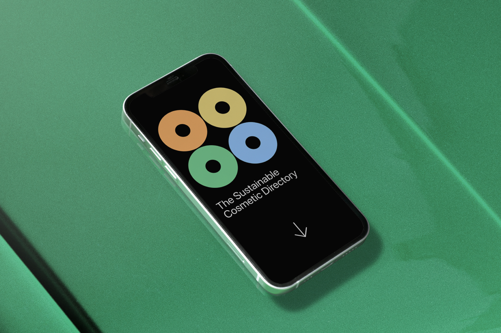
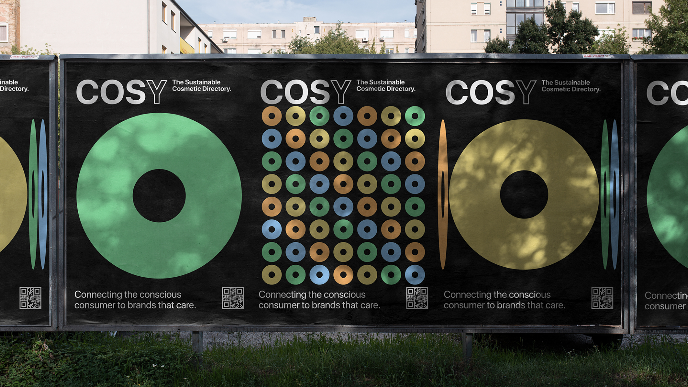
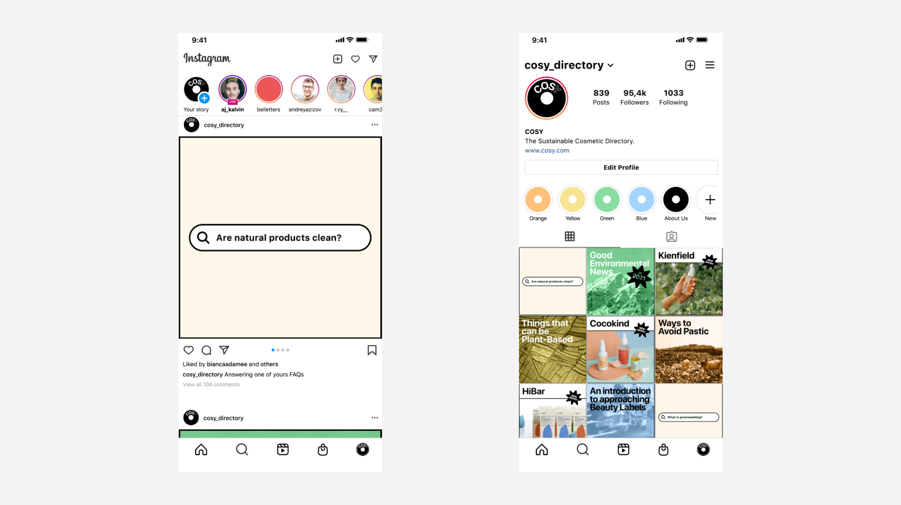

COSY: The Sustainable Cosmetic Directory

The online search index that contains the most ethical cosmetic brands on the market. It is the tool to allow consumers to a more aware purchase regarding sustainable cosmetic products.
Thesis brief: "Make People Choose", supervised by professors Paolo Accanti and Luca Toccaceli, in collaboration with IBL - Istituto Bruno Leoni.

